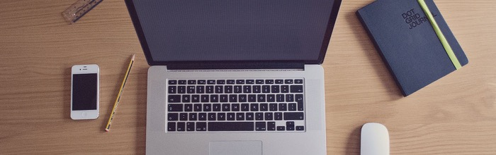
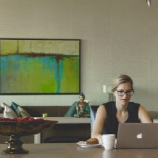
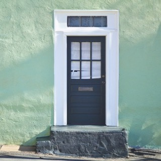
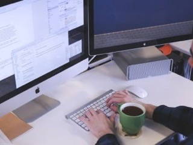

Werken zonder gedoe
Een bureau in hartje Gent, per dag of per maand.
Bekijk de ruimtesOnze ruimtes

Open werkvloer
Achttien plaatsen in één lichte ruimte, met snelle wifi en koffie zonder limiet. Ideaal als je graag onder de mensen werkt.

Vaste bureau
Je eigen bureau met kast, dag en nacht toegankelijk.
Vergaderzaal
Plaats voor acht, met scherm en whiteboard.
Belhokje
Twee geluiddichte cabines voor een videogesprek.

Eventruimte
De hele benedenverdieping, voor maximaal vijftig gasten.
Zo werkt het
1. Kies je formule
Een dagpas, tien beurten of een vaste plaats per maand.
2. Reserveer online
Je krijgt meteen een badgecode in je mailbox.
3. Kom langs
De deur gaat open om zeven uur, elke werkdag.

Wie zijn wij?
De Werkplaats begon in 2019 als een gedeeld atelier van vier freelancers. Vandaag delen ruim tachtig mensen dit gebouw aan de Coupure.
Wij verhuren geen bureaus, wij bouwen een buurt. Kom gerust eens een dag proefdraaien.